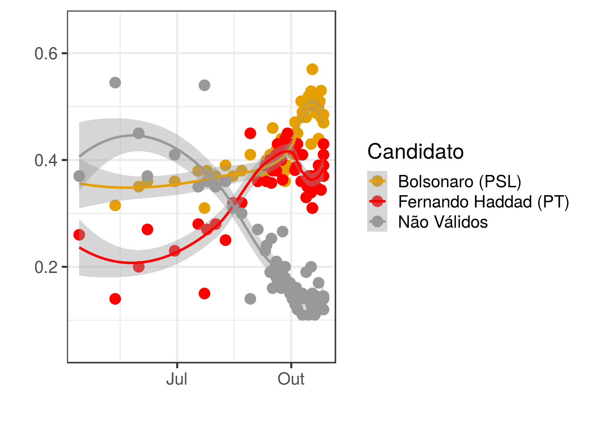
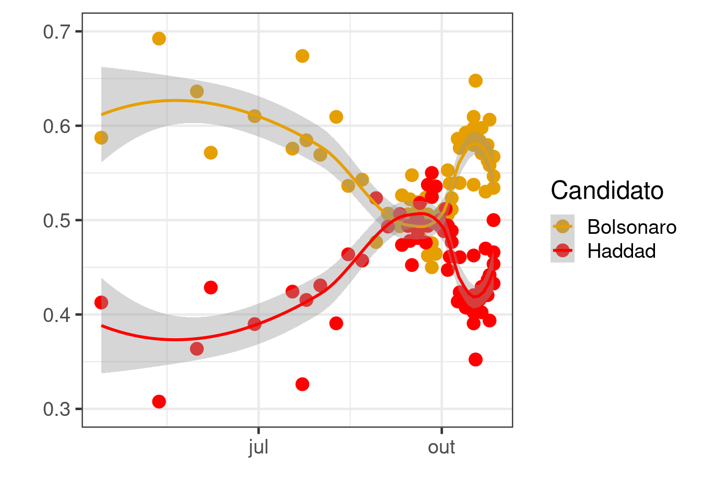
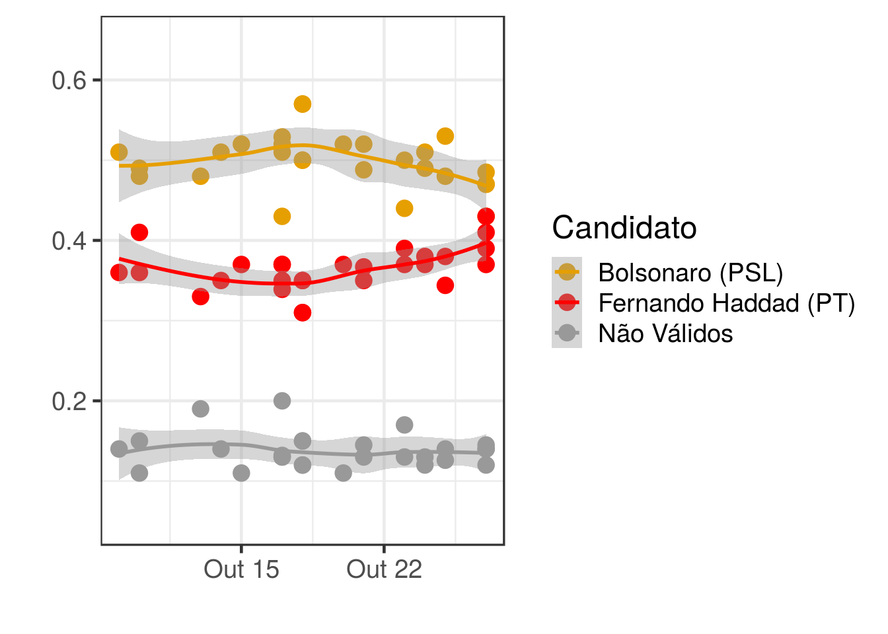
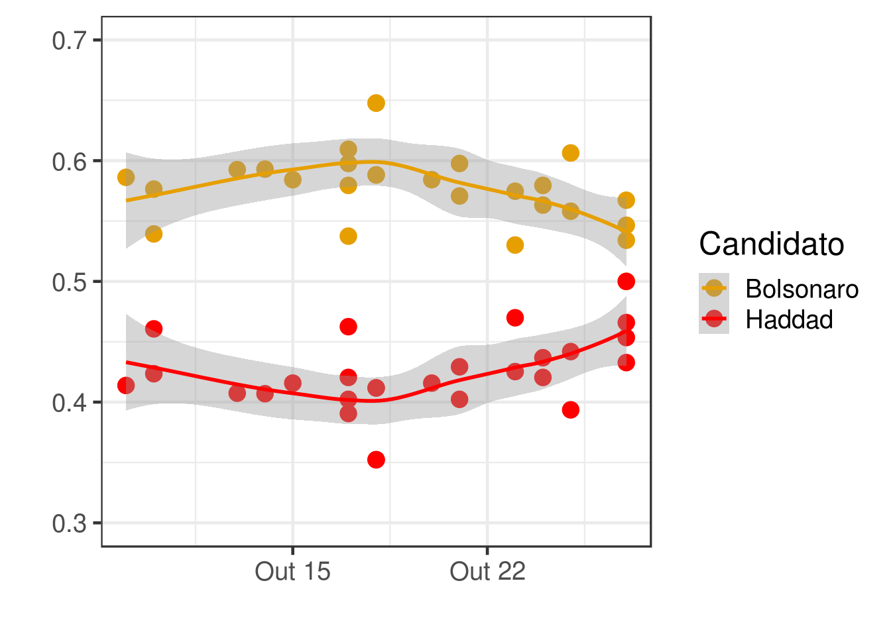
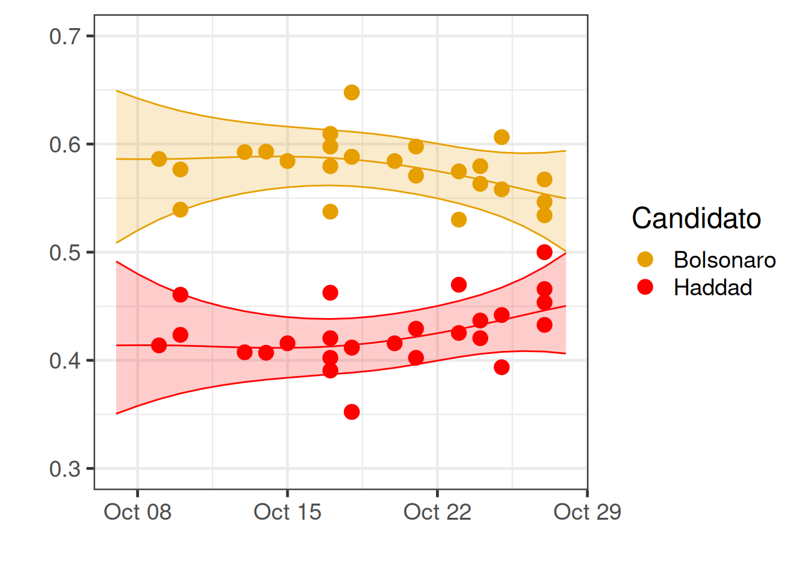

Peguei os dados das pesquisas registradas usando no site pooling data http://www.pollingdata.com.br.
library(tidyverse)
library(lubridate)
dados <- read_csv2(file = "files/PollingData - 2018-T2-Brasil-BR-President.csv")
dados1 <- dados %>% gather(Candidato, Prop,-Data,-Instituto, -link, -Entrevistas) %>%
mutate( Prop = Prop / 100)
dados2 <- mutate(dados, Total = `Bolsonaro (PSL)` + `Fernando Haddad (PT)`,
Bolsonaro = `Bolsonaro (PSL)` / Total,
Haddad = `Fernando Haddad (PT)` / Total ) %>%
select( Data, Bolsonaro, Haddad) %>%
gather(Candidato, Prop,-Data)

\[Y_t \sim Beta(\mu_t, \phi), \quad t=1,2,\ldots \] onde \(t=1\) é o dia da eleição (não considerei o resultado da eleição do primeiro turno), a função de ligação é dada por \[logit(\mu_t) = \alpha + \beta_t\] onde \(\alpha\) é um efeito fixo, e \(\beta_t\) segue um passeio aleatório de ordem 2.
library(INLA)
# Somente segundo turno, votos válidos para Haddad e adicionado a data da eleicao
dadosM <- filter(dados2, Data > "2018-10-07", Candidato == "Haddad") %>%
bind_rows(tibble(Data = seq.Date(from = ymd("2018-10-07"), to = ymd("2018-10-28"), by=1), Candidato = "Haddad", Prop = NA)) %>%
mutate( Days = as.numeric( Data - min(Data) ) + 1 )
model <- Prop ~ 1 + f(Days, model = "rw2")
r <- inla(model, data = dadosM, family = "beta", control.predictor = list( compute = T, link = T))
summary(r)##
## Call:
## c("inla(formula = model, family = \"beta\", data = dadosM, control.predictor = list(compute = T, ", " link = T))")
##
## Time used:
## Pre-processing Running inla Post-processing Total
## 0.6319 0.1783 0.2812 1.0913
##
## Fixed effects:
## mean sd 0.025quant 0.5quant 0.975quant mode kld
## (Intercept) -0.3286 0.052 -0.4313 -0.3287 -0.2257 -0.3289 0
##
## Random effects:
## Name Model
## Days RW2 model
##
## Model hyperparameters:
## mean sd 0.025quant
## precision parameter for the beta observations 84.22 24.86 44.16
## Precision for Days 20441.54 19110.45 1807.55
## 0.5quant 0.975quant mode
## precision parameter for the beta observations 81.44 141.12 76.04
## Precision for Days 15014.99 71092.68 5152.67
##
## Expected number of effective parameters(std dev): 2.41(0.3295)
## Number of equivalent replicates : 9.543
##
## Marginal log-Likelihood: 28.76
## Posterior marginals for linear predictor and fitted values computedPrediction <- as_tibble(r$summary.fitted.values[24:nrow(dadosM),]) %>% bind_cols(Data = seq.Date(from = ymd("2018-10-07"), to = ymd("2018-10-28"), by=1))
p1 <- ggplot(filter(dados2, Data > "2018-10-07"), aes(x = Data, y = Prop, color = Candidato)) + geom_point(size = 4) + theme_bw(base_size = 18) + xlab("") + ylab("") + scale_color_manual(values=c("#E69F00", "red")) + ylim(c(0.3,.7))
p1 + geom_line(data = Prediction, mapping = aes(x = Data, y = mode), color = "red") +
geom_ribbon(data = Prediction, mapping = aes(x = Data, y = mode, ymin = `0.025quant`, ymax = `0.975quant`), color = "red", fill = "red", alpha = 0.2) +
geom_line(data = Prediction, mapping = aes(x = Data, y = 1-mode), color = "#E69F00") +
geom_ribbon(data = Prediction, mapping = aes(x = Data, y = 1-mode, ymax = 1-`0.025quant`, ymin = 1-`0.975quant`), color = "#E69F00", fill = "#E69F00", alpha = 0.2)## Warning: Ignoring unknown aesthetics: y
## Warning: Ignoring unknown aesthetics: y